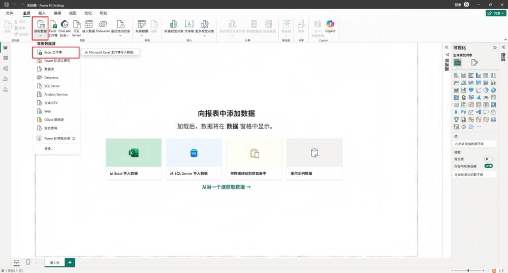
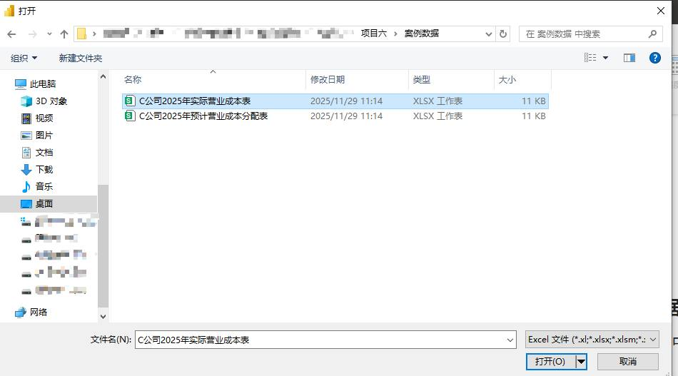
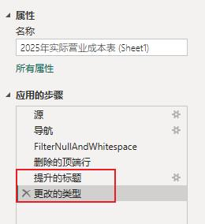
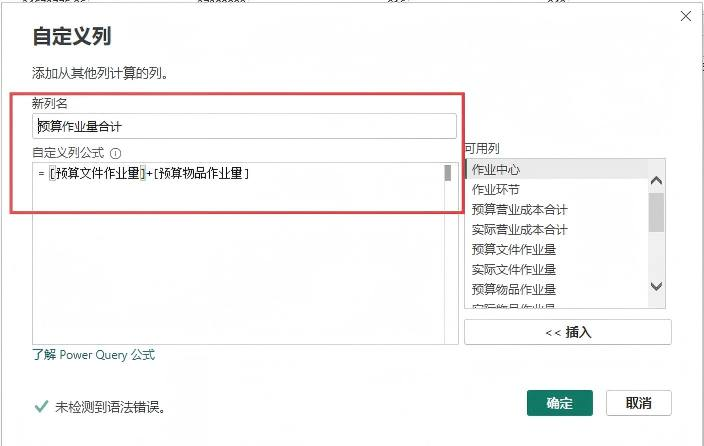
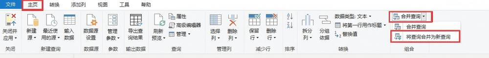
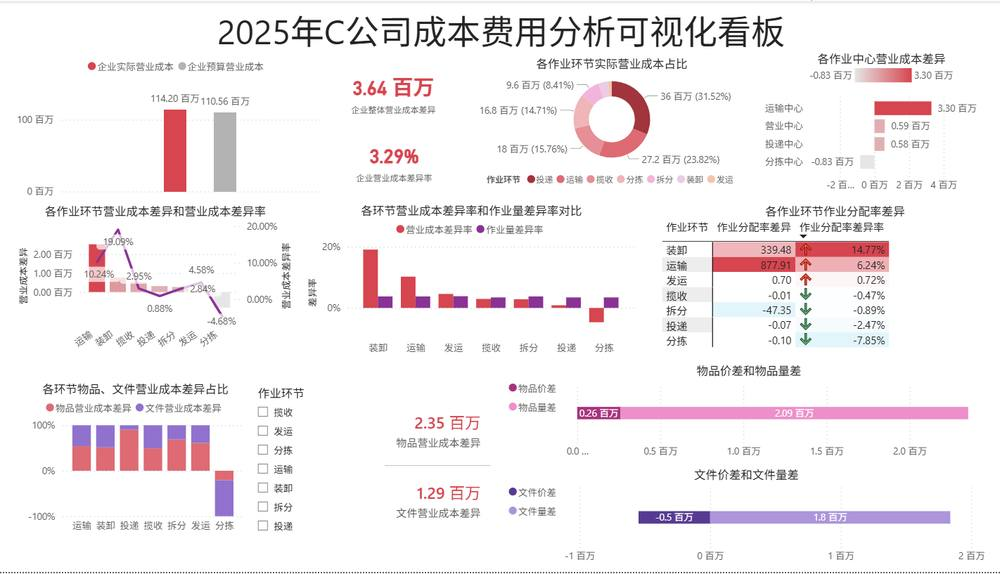
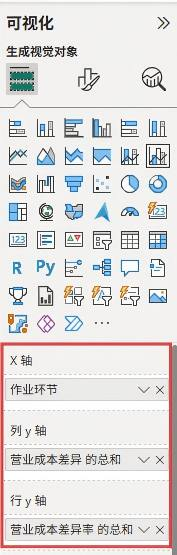
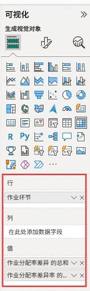

第 1 页 · 项目六

项目六
AI+成本费用分析
从“事后算账”到“价值创造”的跨越
成本动因深度分析 · AI模型构建 · Power BI价值可视化
知识目标
理解成本费用分析的核心维度与AI应用逻辑，掌握Power BI进行数据处理与分析的基础操作方法。
能力目标
能够运用AI技术构建成本分析模型，并使用Power BI实现成本数据的专业可视化展示与动态分析。
素养目标
建立深度的成本动因溯源思维，培养在团队协作中推动精益改善的职业素养与协同能力。
【备注】大家好，欢迎来到项目六的学习。本次课程主题是“AI+成本费用分析”。我们将从知识、能力、素养三个层面设定清晰的学习目标，旨在帮助大家掌握利用AI进行成本费用分析的核心技能，实现从“事后算账”到“价值创造”的跨越。
第 2 页 · AI导学 · 成本费用重塑
AI导学 · 成本费用重塑
AI如何重塑成本费用分析
传统成本分析核心痛点
手工操作效率极低
分析人员需跨报表手工比对数据，耗时耗力，无法快速响应业务询问
差异根因难以定位
数据分散导致成本异常点难关联具体动因，超支或浪费问题难追溯源头
决策支撑严重滞后
报表产出慢于业务节奏，管理者无法实时掌握成本动态，调整策略被动
价值挖掘深度不足
仅停留在数字核对，难以从成本结构中挖掘降本增效的潜在空间
AI重塑成本分析的核心逻辑与价值
| 核心维度 | AI技术赋能方式 | 业务与管理落地价值 |
| 数据智能整合 | 多源数据自动拉取 | 自动整合财务、业务、预算多系统数据，省去80%人工数据整理时间 |
| 异常差异自动定位 | 系统自动识别超预算、异常波动费用项，不再依赖人工逐项排查核对 | |
| 动因关联分析 | 自动关联成本发生的业务动因，清晰展示费用与业务活动间的因果关系 | |
| 决策精准支撑 | 可视化成本流向展示 | 以直观图表呈现成本构成与流向，让财务和运营状况一目了然 |
| 高效决策辅助建议 | 基于数据智能提供成本优化方向建议，帮助管理者快速制定降本增效决策 |
项目核心目标与能力落地
掌握AI成本分析全流程
掌握“AI+成本费用分析”全流程方法，实现从数据整合到洞察的闭环
摆脱低效报表核对
将财务与运营人员从繁重手工报表比对中解放，释放人力聚焦深度分析
聚焦动因管控与利润挖掘
以作业动因为核心开展成本管控，从数据中挖掘利润空间实现价值落地
【备注】在正式开始之前，我们先了解一下AI是如何重塑成本费用分析的。传统分析模式耗时费力，而AI技术能帮助我们快速整合多源数据、自动定位成本差异与动因，让每一笔费用的去向都清晰可见。本项目的核心目标，就是帮助大家掌握利用AI进行高效成本管控和利润挖掘的能力，从繁琐的报表中解放出来，转向真正的价值分析。
第 3 页 · Task 01 · C公司成本分析专项任务
Task 01 · C公司成本分析专项任务
C公司2025年营业成本深度对比分析
项目背景与核心分析目标
企业背景
快递行业头部企业七大作业环节成本结构复杂
项目任务
对比2025预算与实际成本深度定位超支核心动因
分析对象
全环节营业成本数据物品/文件类业务成本明细
最终目标
优化作业环节效率释放利润空间降本增效
核心分析问题与洞察方向
| 分析维度 | 关键分析问题 | 核心数据来源 |
| 成本总览 | 整体预算/实际成本总额是多少？全年整体成本差异规模与方向？ | 年度营业成本预算表2025年财务实际成本总账 |
| 作业环节差异 | 各环节成本占比与差异正负？严重不利差异环节及差异率？ | 各作业中心成本台账环节作业量统计明细表 |
| 作业效率与分配 | 哪个环节量增本减实现节约？作业分配率超支最严重环节？ | 作业效率分析报表作业分配率计算底稿 |
| 差异动因分解 | 物品/文件成本差异主因是量/价？各环节差异来源构成占比？ | 物品/文件成本明细台账价差量差计算分析底稿 |
分析执行与成果落地保障
成本数据清洗与校准
对预算与实际成本数据进行核对去重，补全缺失环节数据，确保七大作业环节数据口径统一准确。
环节差异交叉验证
结合各作业环节的业务量变化、单价波动进行双向验证，对比行业标准数据，确保差异归因精准无误。
降本方案落地跟进
将分析结论转化为各环节优化指标，设定降本KPI并落实到部门，定期复盘调整确保成本节约落地。
【备注】为了让大家更好地理解，我们将通过一个具体的案例来展开学习。我们将扮演C公司的成本分析师，这家公司是快递行业的头部企业，拥有复杂的七大作业环节。我们的任务是基于它2025年的预算与实际营业成本数据，回答屏幕上列出的这一系列核心问题，定位超支动因，从而为优化作业效率、释放利润空间提供决策支持。
第 4 页 · 01

01
TASK 01 · 任务一
AI驱动的成本费用分析
从理论到模型，构建成本分析的框架，系统梳理成本费用分析的核心逻辑，掌握将业务场景转化为可量化成本指标的方法，为企业降本增效提供专业的数据支持与决策依据。
基础认知：作业成本法
学习成本费用分析的核心方法论——作业成本法（ABC），深入理解其分配逻辑，了解该方法在企业精细化成本核算中的关键应用场景。
AI构建结构化分析模型
掌握如何利用AI工具将业务问题转化为结构化的成本分析模型，实现对复杂费用数据的高效清洗、整合与智能洞察挖掘。
【备注】现在我们进入任务一：AI驱动的成本费用分析。在这个任务中，我们将首先学习成本分析的核心方法论——作业成本法，然后学习如何利用AI工具，将这些理论知识转化为一个可执行的分析模型。
第 5 页 · Task 01 · Cost & Expense Analysis
Task 01 · Cost & Expense Analysis
成本费用分析基础认知
核心：作业成本法 (ABC) 逻辑
因果链逻辑
建立“资源-作业-成本对象”的关联，将成本归属建立在可追溯的真实业务活动上
动因量化基础
摒弃传统比例分摊，依据作业消耗的动因（如工时、次数）精准量化成本消耗
分析核心目标
锁定成本差异来源，明确差异产生是源于业务量变化还是单位作业效率的波动
数据支撑决策
让成本数据与业务动作直接挂钩，为降本增效和资源重新分配提供数据支撑
ABC 分析执行路径体系
| 分析步骤 | 关键执行动作 | 分析目标与价值产出 |
| 总额对比 | 统计预算金额、实际发生金额，计算总差异 | 快速锁定当期成本费用的整体超支或节约规模，明确分析的总体方向与重点问题 |
| 差异拆解 | 按部门、作业类型、产品线等维度向下拆解差异 | 定位差异发生的具体环节与责任主体，缩小分析范围，避免笼统归因 |
| 动因量化 | 区分业务量变动、单位作业成本变动两大驱动因素 | 科学量化不同动因对总差异的具体贡献额，识别真正导致成本异常的业务或效率问题 |
| 决策落地 | 结合动因结果制定针对性管控或优化动作 | 将分析结果转化为降本或提效行动，优化作业流程与资源配置，持续改善成本结构 |
关键量化公式与分析要点
量差（业务量差异）
公式：(实际作业量-预算作业量) × 预算分配率，反映纯业务规模变化带来的成本影响
率差（单位效率差异）
公式：实际作业量 × (实际分配率-预算分配率)，衡量单位作业的成本控制效率
综合分析原则
两者结合判断成本合理性，业务扩张导致量差为正常，效率下降导致率差需立即管控
【备注】本页重点介绍成本费用分析的核心方法论——作业成本法（ABC）。其核心是建立“资源、作业、成本对象”的因果链，将成本分析深入到业务动作。具体分析分为三步：首先总额对比锁定差异规模；其次向下拆解定位差异环节；最后通过量差和率差两个公式量化业务量和单位成本对差异的具体贡献。量差反映业务规模变化，率差反映单位作业的成本效率，两者结合才能全面评估成本的合理性，并制定正确的管控对策。
第 6 页 · Task 01 · 成本费用分析模型构建
Task 01 · 成本费用分析模型构建
运用AI构建成本费用分析模型
成本费用分析模型的核心运作逻辑
01 核心逻辑
数据输入→智能处理→多维分析→结果输出→决策支持
02 拆解分析
整体-环节-动因-细分-责任五层拆解，精准回应10大核心问题
03 闭环设计
分析落地降本措施与责任落实，新数据持续输入优化模型
模型落地实施的关键保障措施
构建ABC作业成本框架
以作业成本法为模型骨架，将各作业中心的资源耗费精准映射为可计算、可追踪的数据节点。
责任体系精准绑定
将模型分析出的成本异常与优化机会，直接关联到对应责任部门及岗位，避免分析结果空转。
动态数据持续迭代
定期收集最新的业务成本数据输入模型，不断校准参数，保障分析结果始终贴合当前业务现状。
【备注】构建分析模型至关重要。我们可以通过向AI输入清晰的指令，快速生成一个以作业成本法（ABC）为基础的专业成本费用分析模型。这个模型遵循“数据输入-处理-分析-输出-决策”的核心逻辑，并设计了持续优化的闭环，能够帮助我们精准拆解成本动因，回答成本管控中的10个核心问题，并确保每一个分析结论都能落实到具体责任和降本措施上。
第 7 页 · Topic · 成本费用分析优化专题
Topic · 成本费用分析优化专题
成本费用分析模型迭代优化
01. AI生成模型的局限与优化方向
AI推荐的局限性
AI生成方案多为通用模型，缺乏对成本动因、作业环节等业务细节的深度适配，易造成信息偏差。
迭代优化核心思路
结合Power BI等可视化工具，为每个成本分析节点定制专属图形，强化业务量与成本关联的直观表达。
研讨场景设定
聚焦“业务量-成本联动分析”，面对不同作业环节的数据，AI初步推荐采用散点图作为展示方案。
评估双维度锚点
从“正确性”验证逻辑匹配度，以“最优性”衡量表达效率，双重维度完成对AI推荐的专业评估。
02. 深度研讨：散点图推荐合理性校验
| 评估维度 | 成本分析场景 | 核心研讨与优化方向 |
| 正确性 | 差异率关系对比 | 散点图能否清晰区分各作业环节？数据点是否会重叠导致差异率趋势被掩盖？是否违背了成本分析中“环节可追溯”的基本要求？ |
| 多环节责任界定 | 若存在多个成本中心，散点图能否明确各环节成本与业务量的对应责任主体？是否会造成归因混淆，影响后续管控动作落地？ | |
| 最优性 | 成本动因敏感性 | 相比散点图，分组柱状图或折线图是否能更高效呈现成本随业务量变化的敏感程度？能否更快速定位成本管控的关键作业环节？ |
| 跨周期波动复盘 | 结合瀑布图展示增量构成，或热力图对比周期差异，是否比单纯散点更能凸显“浪费点”与“改善点”，让复盘更具行动导向？ |
03. 迭代优化后的实践价值
专业视角完成校验
用财务成本专业逻辑修正AI通用推荐偏差，确保可视化结果贴合业务规则与管控要求。
可视化精准赋能沟通
定制化图形还原成本结构，让非财务人员快速理解成本逻辑，大幅降低跨部门协作的沟通门槛。
主动挖掘隐性机会
从被动接受AI结果，转向主动构建分析逻辑，精准定位成本浪费与优化空间，支撑精细化降本。
【备注】这一页我们聚焦成本费用分析模型的迭代优化。首先明确，AI生成的模型不是完美的，它存在对业务场景细节适配不足的局限。我们需要做的，就是结合Power BI等工具，对它进行专业的迭代。
中间的表格展示了今天的核心研讨点：当AI为“业务量-成本联动分析”推荐散点图时，我们如何从“正确性”和“最优性”两个维度去审视？大家要思考，散点图是否能清晰区分作业环节？是否有更高效的图表能帮助我们定位浪费点？
最后，通过这次优化，我们不仅能确保数据展示的准确，更能赋能沟通，主动挖掘降本机会，让成本分析真正落地。
第 8 页 · 02

02
TASK 02 · 任务二
Power BI成本费用分析可视化
从理论到实践，亲手打造可视化看板，深入学习成本费用数据的分析逻辑，掌握如何将繁杂的财务与业务数据转化为清晰的决策依据。
数据采集与加工
学习使用Power BI连接并获取Excel中的成本费用数据，掌握数据清洗、合并列与表以及关键计算列的创建，为分析做好准备。
成本分析看板构建
掌握成本分析常用的图表制作方法，整合数据维度，搭建一个综合的成本费用分析看板，直观展示各项费用占比与变化趋势。
【备注】理论学习结束，现在我们进入任务二：Power BI成本费用分析可视化。在这个任务中，我们将亲手操作，学习如何从Excel文件中获取数据，进行复杂的加工处理，并最终将其转化为一个直观、强大的成本分析看板。
第 9 页 · Task 01 · 数据采集与加工
Task 01 · 数据采集与加工
数据采集及初步数据加工
Excel 数据源接入全流程解析
| 步骤 | 操作执行路径 | 核心操作说明 |
| 01 获取数据 | 主页 → 获取数据 → Excel工作簿 | 在Power BI主界面顶部切换至“主页”选项卡，找到并展开“获取数据”下拉菜单，选择“Excel工作簿”启动数据源接入。 |
| 02 选择文件 | 定位文件夹 → 选中Excel → 打开 | 弹出系统文件浏览器后，浏览找到存储目标Excel数据的文件夹，选中对应.xlsx文件，点击右下角“打开”进入下一步。 |
| 03 转换与清洗 | 选中数据表 → 转换数据 → 清洗 | 勾选目标工作表后，点击“转换数据”进入Power Query编辑器，执行去错、设表头、填充缺失值等清洗操作。 |
实操界面关键节点演示

01 启动数据源接入
Power BI首页功能区，精准定位“获取数据”入口，是所有数据加载的第一步，支持本地与云端多种数据源。

02 选定本地数据文件
在系统级文件浏览器中，浏览并选中准备好的本地Excel数据文件，支持多级目录查找。

03 进入数据清洗环节
在Power Query中取消自动提升标题，调整字段结构，完成对不规则数据的基础规整。
关键注意事项
01 数据源格式规范：原始Excel中避免合并单元格与多余空行，否则将导致数据识别错位。
02 清洗优先级确认：先设置表头与数据类型，再向下填充缺失值，避免清洗顺序混乱造成字段错位。
03 后续刷新机制：原始文件路径变更后需重新指定，建议将数据文件与PBIX文件保持同目录便于管理。
【备注】这一页我们来拆解Power BI从Excel采集数据的完整流程。第一步，启动获取数据，选择Excel工作簿。第二步，在弹出的浏览器中选择本地准备好的文件。最关键的第三步是进入Power Query编辑器进行清洗，因为原始数据往往不规范，必须先取消自动提升标题、设置好表头并填充缺失值，才能保证后续建模分析顺利。下方三张截图分别对应这三个关键操作界面，大家可以对照自己的屏幕检查操作是否一致。同时，注意事项中的三点是最容易踩坑的地方：源文件格式、清洗顺序以及文件路径管理，请务必留意。
第 10 页 · STEP 02 · 数据深度加工与指标构建
STEP 02 · 数据深度加工与指标构建
进一步数据加工
合并成本表格并计算差异分析关键字段
01. 合并多源查询
以“作业环节”为键 关联实际与预算表
02. 规整数据表结构
展开合并数据 重排列顺序统一结构
03. 计算核心差异指标
DAX公式算差异/量差/价差与差异率
04. 标准化数据格式
差异率列设为百分比 规范数值展现
合并关联：打通数据孤岛
操作上通过“合并查询”功能，以作业环节作为唯一匹配依据，将分散在两张表中的实际成本与预算成本关联，使分析口径保持一致；并展开嵌套数据结构，调整列顺序，保证数据整洁有序，为后续计算做好准备。

数据加工对成本管控分析的核心价值
统一数据口径，消除核算歧义
合并实际与预算表后，所有成本指标都基于“作业环节”对齐，避免数据口径不一致造成的分析误差，让成本对比有可靠依据。
量化成本偏差，精准归因问题
通过公式拆分“量差”和“价差”，将笼统的总成本差异拆解为可控的驱动因素，帮助管理人员精准识别成本超支是源于用量还是单价，从而针对性改进。
建立规范标准，支持持续监控
标准化的数据格式和统一的指标计算逻辑，让后续的月度、季度成本复盘无需重复整理数据，支持常态化的成本监控与分析报表自动化。

【备注】数据清洗完成后，我们需要进行进一步的加工。这一页展示了两个核心操作：首先是合并数据，我们将分散的实际成本表和预算成本表进行关联对齐；其次是计算关键指标，通过DAX公式算出差异、差异率、量差、价差，从而量化成本的偏差，为精准归因和后续管控提供可靠依据。
第 11 页 · Task · 成本费用分析可视化呈现
Task · 成本费用分析可视化呈现
数据可视化看板——成本全景洞察
01 / 看板核心视觉呈现
六大核心分析维度整合
看板集中展示：① 整体成本汇总对比（实际vs预算）；② 各作业中心成本差异排行；③ 关键作业环节成本与差异率；④ 业务量-成本联动趋势；⑤ 作业分配率差异计算；⑥ 物品/文件类业务的成本结构拆分，全方位覆盖成本分析场景。
设计亮点：以红/绿直观区分超支与节约，通过组合图与条形图联动，实现从宏观总览到微观环节的穿透式查询。
02 / 分析逻辑与数据关联
成本差异层层拆解逻辑
从整体预算差异切入，自上而下拆解至作业中心，再下沉到具体环节与分配率。利用因素分析法量化“量差”与“价差”对总成本波动的具体影响，精准定位责任主体。
业务场景与数据联动机制
打通“物品类”与“文件类”业务量系统数据，建立成本随业务量变化的弹性分析模型。实现数据实时刷新，当成本偏离阈值时自动预警，支持业务端快速做出调整响应。
| 应用场景 | 管理价值与决策支持 |
| 预算执行监控 | 实时监控各部门与作业中心预算达成率，对超支项自动高亮预警，帮助财务部门及时介入成本管控，避免年末决算偏差过大。 |
| 效率瓶颈诊断 | 针对差异率最高的作业环节（如运输、分拣）进行专项诊断，分析是因业务量不足导致的固定成本分摊过高，还是因单位变动成本异常上涨造成，辅助运营部门改善流程。 |

【备注】数据准备就绪，现在我们进入最激动人心的可视化环节。我们的目标是构建一个像屏幕展示这样的综合成本分析看板。这个看板整合了六大核心分析维度：从整体成本的预算对比，到作业中心、作业环节的层层拆解，再到业务量与成本的联动分析以及分配率差异计算，并最终细化到物品与文件等不同业务类型。通过红绿色的直观预警和穿透式查询，这个看板能帮助我们360度全景洞察成本状况，精准定位差异根源，从而快速做出管理决策。
第 12 页 · Step 01 · Cost Analysis Dashboard
Step 01 · Cost Analysis Dashboard
可视化实现步骤 (1/2)
01 基础准备：标题与度量
添加看板主标题，定义企业级核心度量值，包括“企业实际营业成本”“整体成本差异”等汇总指标，为后续分析奠定数据基础。
02 构建对比类核心图表
拖拽生成簇状柱形图对比实际与预算营业成本，并制作簇状条形图横向对比各作业中心的成本差异值，快速定位超支环节。
03 补充概览与结构图表
添加关键指标卡片展示“整体成本差异率”，同时创建环形图拆解各作业环节成本占比，形成“总-分”分析视角。
字段映射实操：配置界面参考
可视化字段配置逻辑：
1. 指标卡片：直接绑定数值型字段（如企业整体营业成本差异），无需分类维度，聚焦单一汇总数据的醒目展示。
2. 结构/分类图：添加分类维度（如“作业环节”）至图例轴，数值维度（实际成本合计）至值域，即可生成环形/条形等结构分析图。
落地优化与展示技巧
精准计算逻辑
确保成本差异度量值的计算逻辑正确，包含所有作业环节明细，避免数据口径不一致。
选择合适图表类型
对比预算使用柱状图；排名分析使用条形图；占比拆解使用环形图，减少视觉解读成本。
排序强化重点
条形图按成本差异数值从大到小排序，让异常超支的作业中心在看板中第一眼被发现。
增加筛选交互
为看板添加日期、部门切片器，支持查看不同周期、不同部门的成本费用情况，提升分析灵活性。
【备注】这一页我们来拆解成本费用分析看板的具体搭建步骤。
第一步，是做好基础准备。大家需要先给看板设置一个清晰的标题，并提前创建好需要分析的核心度量值，比如“企业整体成本差异”，保证后续图表数据统一。
第二步，构建核心的对比分析。我们需要用簇状柱形图来对比预算和实际成本，用条形图来对比各作业中心之间的差异。这能帮助我们直观地发现超支项。
第三步，补充概览与结构。通过卡片图展示总差异，环形图展示成本构成。中间的截图展示了配置这些图表时，如何拖拽字段。最后底部有四个优化技巧：保证计算精准、选对图表类型、排序突出重点、增加筛选交互，方便我们灵活分析。
第 13 页 · Task 02 · 数据看板完善与配置
Task 02 · 数据看板完善与配置
可视化实现步骤 (2/2)
01 核心分析图表批量创建
组合图：成本差异分析
用折线簇状柱形图呈现各作业环节营业成本差异值与差异率的同步趋势。
对比柱形图：双率对标
构建簇状柱形，并列对比各环节成本差异率与作业量差异率，识别背离环节。
占比与拆分堆积图
百分比堆积柱形展示物品/文件成本占比；条形图拆解价差与量差构成。
矩阵分析表：分配明细
创建矩阵视图，详细陈列各作业环节的分配率差异及对应差异率指标明细。


左图：折线簇状图字段配置示意｜右图：矩阵分析表字段配置界面
02 切片器配置：作业环节筛选
创建基于“作业环节”维度的切片器，嵌入看板顶部，用于全局筛选视图中的所有关联图表，实现数据联动。
03 交互关系独立设置
调整图表交互逻辑，关闭“整体汇总”类图表与细节分析图表之间的联动，避免钻取分析时数据冲突。
04 最终校验与交付
验证切片器筛选结果准确性，确保交互关闭生效，完成看板布局美化后即可交付使用。
【备注】继续完成看板的构建。我们需要批量创建一系列核心分析图表：首先用组合图分析各环节的成本差异和差异率；再用簇状柱形图来对比成本差异率与作业量差异率；同时通过矩阵视图来陈列分配率明细；并用各类堆积图拆分物品与文件的成本结构以及价差量差。
接着，创建基于“作业环节”的切片器实现全局筛选。最后需要调整交互设置，将整体汇总类图表与细节图表的联动关闭，以保证数据展示逻辑清晰，完成整个看板的配置。
第 14 页 · 03

03
TASK 03 · 任务三
AI辅助成本分析报告制作
从洞察到行动，让数据产生价值，将成本分析的数据洞察转化为可执行的降本增效方案，推动成本管控真正落地。
看板数据解读
学习如何深度解读成本分析看板，精准提取核心结论，清晰回答各项业务成本相关问题，挖掘数据背后的成本优化机会。
AI辅助报告撰写
基于梳理好的成本数据洞察，借助AI辅助工具快速生成专业规范的成本分析报告，高效完成分析成果的总结汇报。
【备注】现在我们进入任务三：AI辅助成本分析报告制作。在这个任务中，我们将学习如何解读我们亲手制作的成本看板，从中提取有价值的洞察，并基于这些洞察，利用AI快速生成专业的汇报报告。
第 15 页 · 看板解读 · 成本专项分析
看板解读 · 成本专项分析
看板数据解读与洞察
01｜整体成本概览
2025年整体营业成本超支3.64百万，差异率达3.29%；其中投递、运输、揽收三大核心作业环节合计占比超七成。
02｜作业中心差异
运输中心超支最严重（+3.30百万），营业与投递中心也出现不利差异；仅分拣中心实现有利差异，成为管控亮点。
03｜环节盈亏表现
运输环节超支额居首（2.53百万），装卸环节差异率最大（+19.09%）；分拣环节节约成本0.83百万，成效突出。
04｜量本联动分析
分拣环节在作业量超预算的背景下仍实现成本节约；装卸与运输环节成本超支幅度远超对应业务量增长幅度。
05｜分配率异常预警
装卸环节作业分配率超支14.77%，运输环节超支6.24%；两项指标异常推高单位作业成本，需重点核查。
06｜业务类型拆解
投递环节中物品类业务是成本超支的主要来源；物品与文件两类业务的成本差异均主要由业务量差驱动产生。
核心洞察总结
●成本失控风险点：运输与装卸两大环节是本次成本超支的核心，分配率严重超标暴露了运营效率问题，必须列为整改重中之重。
●管理标杆启示：分拣中心在作业量增加的情况下实现成本优化，其精细化管理经验值得在全公司进行拆解与复制推广。
五大成本管控建议
运输专项治理
梳理运输线路 降低单位费率
装卸效率升级
优化作业流程 严控分配率
复制分拣经验
推广分拣管理模式 全中心降本
物品业务管控
针对物品类投递 优化资源配置
强化协同管控
打通各中心数据 减少环节浪费
【备注】看板制作完成后，我们就可以从中解读出大量有价值的信息。比如，公司整体超支3.64百万，运输中心超支最多，而分拣中心实现了成本节约。装卸和运输环节的分配率超支严重。这些结论直接回答了我们最初提出的业务问题，明确了接下来管控的重点。
第 16 页 · AI辅助分析 · 报告撰写
AI辅助分析 · 报告撰写
AI辅助成本费用可视化报告撰写
报告撰写痛点与AI赋能流程
01 传统模式的核心痛点
分析师深陷数据搬运、制图调版的重复劳动，深度分析与决策时间被严重挤压。
02 AI工具指令输入
向豆包等AI工具设定分析师角色，明确报告主题、分析维度与格式排版要求。
03 一键生成可视化初稿
AI自动生成含成本费用图表、数据解读的完整报告，制作周期从数天缩短至分钟级。
AI赋能带来的核心价值维度
01
效率指数级提升
传统方式完成一份可视化报告平均耗时3-5个工作日，AI介入后仅需数分钟即可生成结构完整、图文并茂的初稿。
02
聚焦深度决策思考
分析师彻底摆脱机械性排版工作，将释放出的80%时间投入到成本动因分析、费用优化等高价值决策判断中。
03
标准化专业输出
统一的报告框架、规范的图表展示与专业术语表达，避免人工撰写带来的格式混乱与信息遗漏问题。
落地应用的关键要点
| 关键维度 | 核心实施细节 | 预期业务收益 |
| 指令精准度 | 明确报告受众与分析目标，细化图表类型、数据维度等格式要求 | 减少反复修改，AI生成内容贴合真实业务场景，有效降低沟通成本 |
| 人工复核环节 | 重点审核成本数据准确性、关键洞察逻辑及费用建议的合理性 | 保障决策依据严谨可靠，同时保留人工专业判断，规避数据偏差风险 |
| 持续优化迭代 | 收集报告使用反馈，沉淀优质指令模板，定期更新AI分析模型 | 逐步提升AI生成报告的精准度与专业度，形成可复用的成本分析体系 |
| 团队能力升级 | 全员掌握AI工具使用方法，强化数据解读与业务结合的综合能力 | 打造数字化分析团队，全面提升财务与业务协同决策的效率与质量 |
【备注】本页主要介绍如何利用AI辅助完成成本费用可视化报告的撰写。传统的报告撰写模式耗时耗力，大量机械性工作占用了分析师的核心精力。通过引入AI工具，我们可以实现从指令输入到初稿生成的高效闭环。同时，在实际落地中，我们需要关注指令精准度、人工复核以及团队能力升级三个关键环节，从而真正实现效率提升与决策质量保障的双重目标。
第 17 页 · 拓展应用

拓展应用
AI拓展应用：报告优化
解决初稿缺陷，打造决策级高层汇报材料
面对AI生成报告存在的重点模糊、逻辑松散、建议空泛等典型问题，通过系统性优化流程，将其升级为支撑高层判断的高质量决策依据。
01. 诊断与评估
深度识别初稿中重点不突出、论据支撑不足等问题，明确每处修改的具体理由与价值方向。
02. 逻辑与重构
采用“问题→根因→影响→对策→决策”五段式重构内容，让报告逻辑严密，论证链条清晰完整。
03. 决策级交付
精修每页视觉表达，确保单页单一核心观点，让优化成果直接适配高层决策场景的效率要求。
感谢聆听 · 共同探索AI赋能决策的更多可能
【备注】最后，我们来探讨AI的拓展应用，聚焦于报告优化。AI生成的报告初稿往往存在重点不突出、逻辑松散等问题，无法直接用于决策。我们的目标就是通过批判性评估、重构逻辑、精修视觉三个核心步骤，将其转化为一份逻辑清晰、重点突出、能够直接支持高层决策的专业汇报材料。这不仅是优化一份报告，更是建立人机协同的高效工作范式。